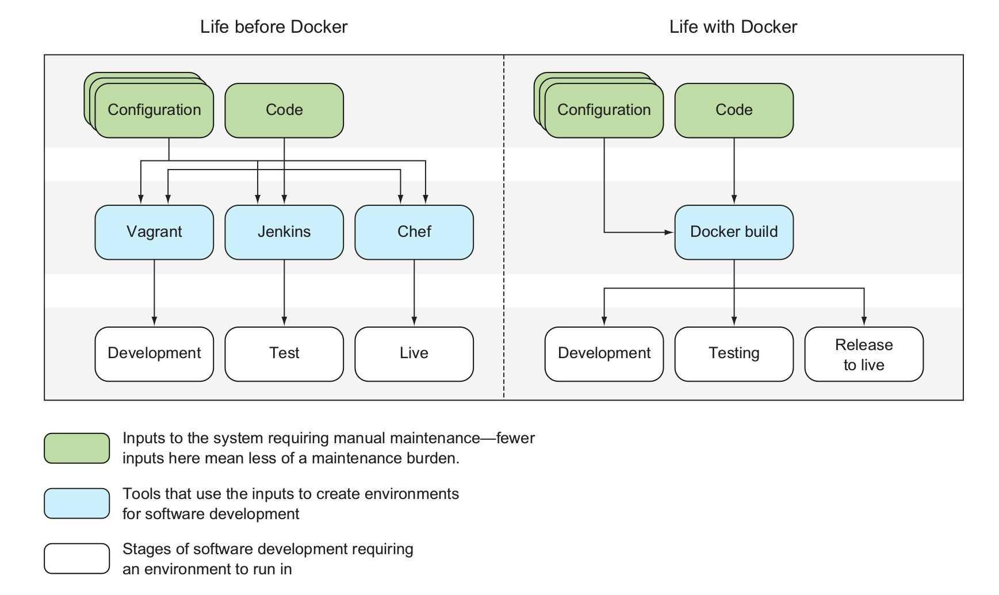

Docker 能解决什么问题？
Docker 是一个开源的应用容器引擎，也就是管理容器的工具，基于 Go 语言开发，并遵从 Apache2.0 协议开源。
Docker 可以让开发者打包他们的应用以及依赖包到一个轻量级、可移植的容器中，然后发布到任何流行的 Linux 机器上，也可以实现虚拟化。容器是完全使用沙箱机制，相互之间不会有任何接口（类似 iPhone 的 App）, 更重要的是容器性能开销极低。
所以 Docker 解决的核心问题是快速发布、快速构建开发与测试环境、让测试成功的环境与线上发布保持一致

你可以用他做这些事情
- 开发一些工具打包运行环境，并提交到仓库，同事可以不用安装依赖，下载直接使用
- 用 Docker 封装应用依赖环境，新人入职无需手动安装环境，直接开始开发
- 在开发环境修复好 Bug 后，可以平滑升级到测试环境/生产环境，不会有任何差异
公众号
如果你想订阅我的文章，可以微信扫码关注我的公众号【机智的程序员小熊】，我是一个爱思考的程序员，专注于开发、运维、云技术、计算、网络、云存储、数据库、linux等编程知识